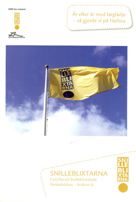

|
Startsidan
Böcker
Dramatik
Kultur-/barnprojekt
Margareta Lindberg |
|

|
|
2010-2013 arbetade jag på uppdrag av riksorganisationen Snilleblixtarna i Sverige tillsammans med lärare och elever i Hallsta skola i Norrtälje kommun med att skapa Sveriges första certifierade Snilleblixtskola. Det resulterade i ett häfte: SNILLEBLIXTARNA- Certifiera Snilleblixtskola förskoleklass - årskurs sex och ett omfattande material på nätet: www. snilleblixtarna.se flik "Så här gjorde vi". |